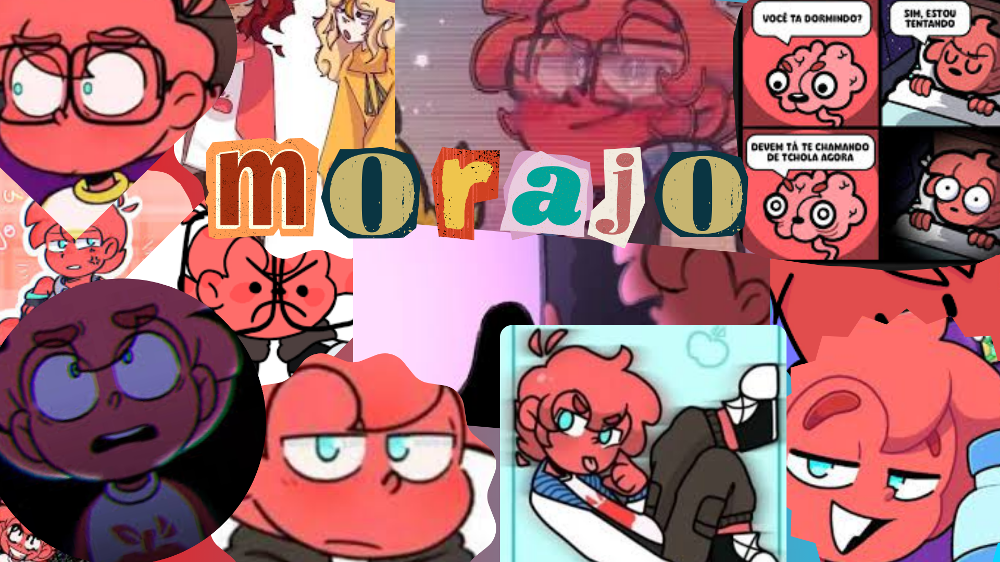

Morajo
É um personagem de Mundo Torajo dublado por Couve Flor. A fruta do Morajo é uma maçã vermelha, ele tem pele e cabelo vermelho, olhos cianos,usa óculos, calça cinza escuro, blusa branca com mangas vermelhas e uma maçã vermelha na frente da camisa, sapatos pretos com uma única listra branca. Ele tem um irmão chamado Torajo e lutou 2 vezes contra ele, não gosta de usar celular e prefere computador, é um dos personagens principais além do Linn, da Zulmi e do Torajo. Sua personalidade é mal-humorada e sempre irá implicar com seu irmão Torajo. Ele é descrito parecido com Linn em termo de exclusividade e ser fechado, mas é mais ranzinza e rabugento.